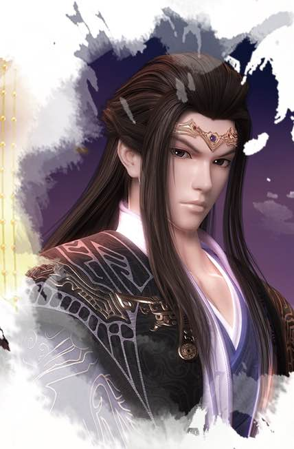

The future King of Western Chu, Xiang Yu. The son of Xiang Yan, a famous general in Chu, and a junior lord of the Xiang clan. Intelligent and courageous, delicate mind and unique talent, has the strength of the TRIPOD. He is a righteous man, though he is young, yet he has the wind of a great general in his hand. He led his clan against the Qin with MOHISM and other allies. And Tianming are good friends and competitors
